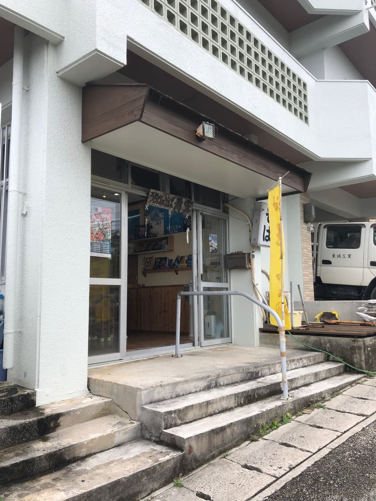
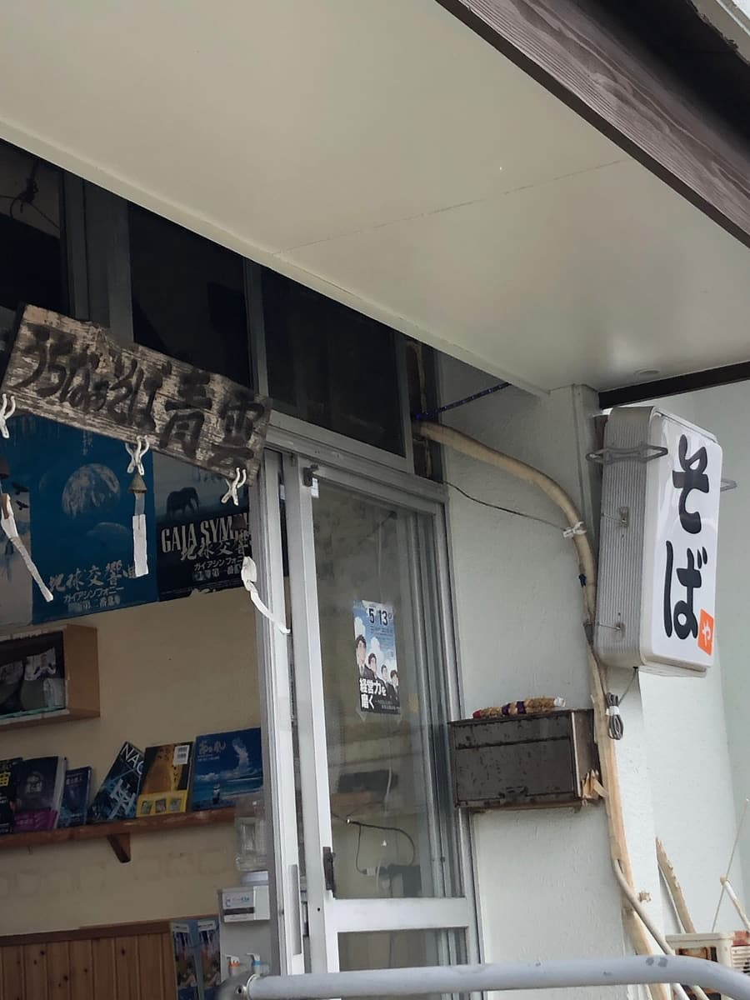
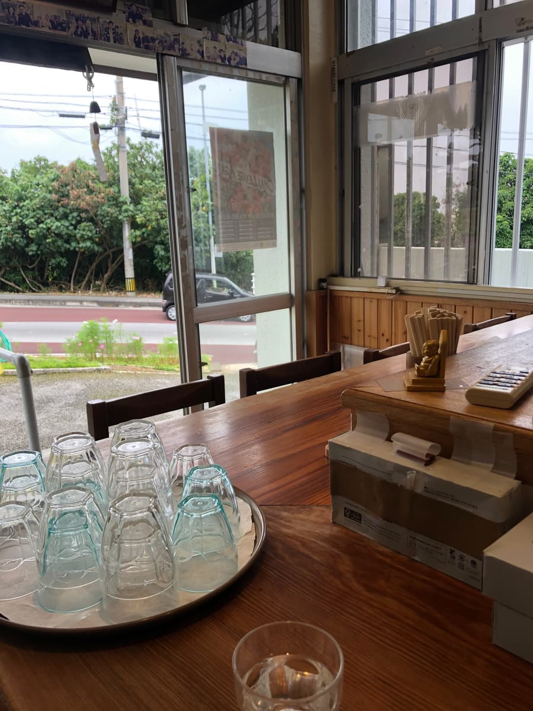
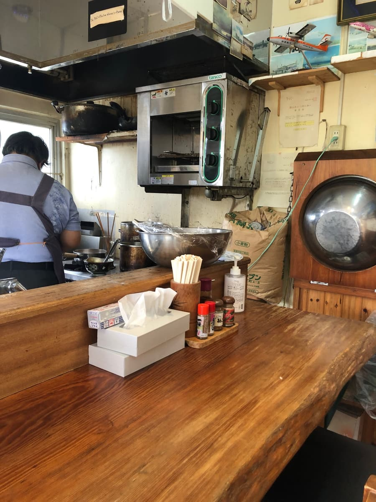
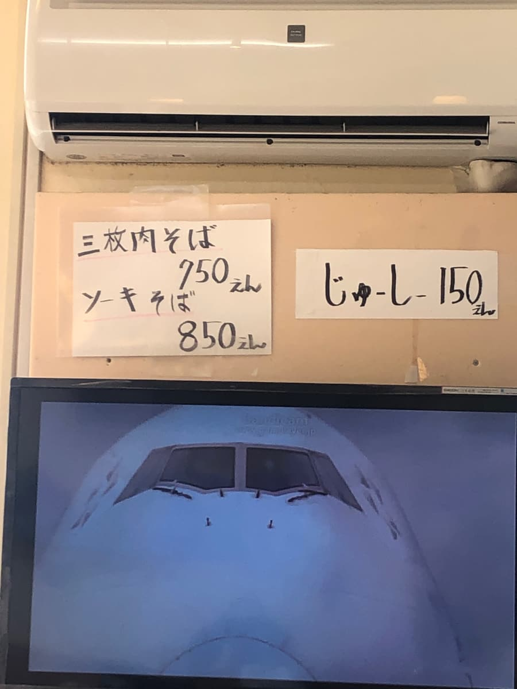
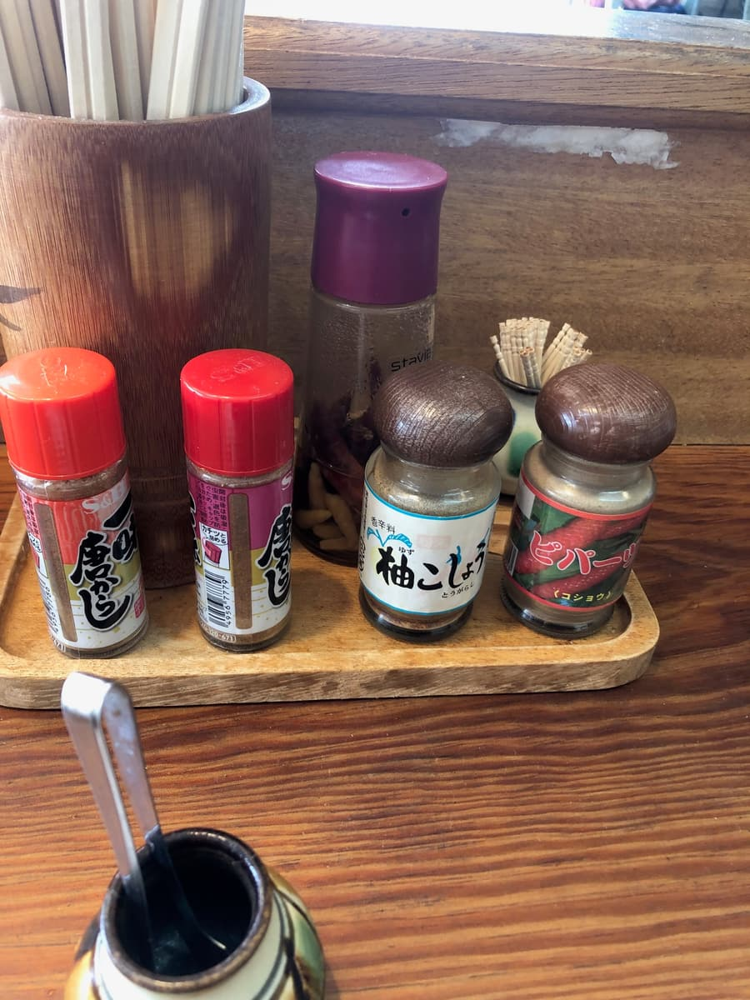
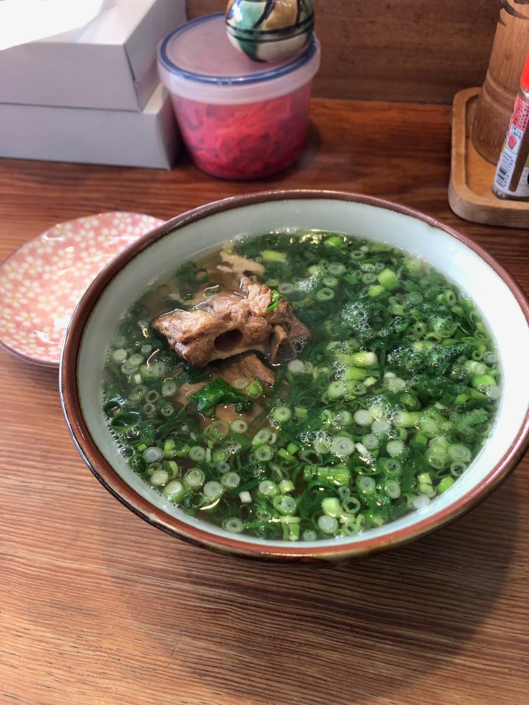
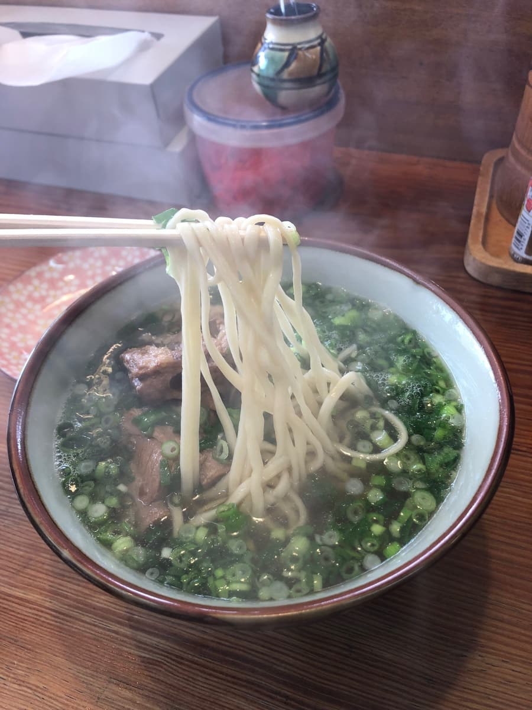

2025.4に食べました😄 今回は浦添市沢岻にある「うちなぁそば青雲」さんにお邪魔してきました🍜

入口には黄色い「そば」ののぼりが立っていますね。木製の渋い看板に「うちなぁそば青雲」と書かれていて、味わいのある佇まいです😊 ガラス越しに店内の様子が見える、開放感のある外観ですね。
入口横にも「そば」の文字。地元密着な雰囲気がプンプン伝わってきますね〜🌺

店内に入ると、カウンター席メインのこぢんまりとした空間。地元の方に長く愛されているお店なんだなぁと感じますね😄 大きな窓からは外の通りが見えて、明るく開放的な雰囲気です。

カウンター越しに厨房が見えて、店主さんが一生懸命そばを作っている姿が見えます。壁には飛行機の写真や模型が飾られていて、ちょっと面白い空間でしたね✈️

メニューはとてもシンプルで、「三枚肉そば750円」「ソーキそば850円」「じゅーしー150円」という潔いラインナップ😄 迷う必要がないのは逆にありがたいですね〜。今回は「ソーキそば」を注文することにしました🍖

卓上には一味唐辛子、柚子こしょう、ピパーチ（島こしょう）など薬味が揃っていますね😋

待つことしばし、「ソーキそば」が登場〜✨ いやー、これはびっくり😳 麺が見えないほどのネギだく具合ですね！こんなにネギがたっぷり乗っているお店は他では見ないなー😆 刻みネギの緑が器いっぱいに広がっていて、見た目にも鮮やかです🌿

まずはスープから。あっさり系の鰹ベースのスープで、優しい味わいですね😊 ネギの風味も加わって、すっきりと飲みやすい一杯です。
ネギをかき分けて麺を引き上げると、中細のストレートタイプの麺が登場。柔らかめの食感で、あっさりスープとの相性も良いですね🍜 ネギだくなので、麺を手繰るたびにネギの食感と風味が一緒に楽しめるのが、このお店ならではの魅力です。

具材のソーキは、適度に味が染み込んだ感じで普通に美味しいですね😄 ただ、少し筋感がある部分もありましたね。
全体を通して、いつでもネギの食感と風味が感じられるのが個性的で、普通に美味しい一杯でしたね😊
評価（9点/15点）：あっさり鰹ベースのスープに柔らかめの中細ストレート麺、適度に味の染みたソーキと、普通に美味しい沖縄そばでした😄 何といっても麺が見えないほどのネギだくが他店には無い個性ですね🌿 地元に愛される雰囲気も良く、浦添市沢岻に来られた際は一度立ち寄ってみては如何でしょうか？🍜
麺 ：★★★☆☆（3）
スープ：★★★☆☆（3）
具 ：★★★☆☆（3）